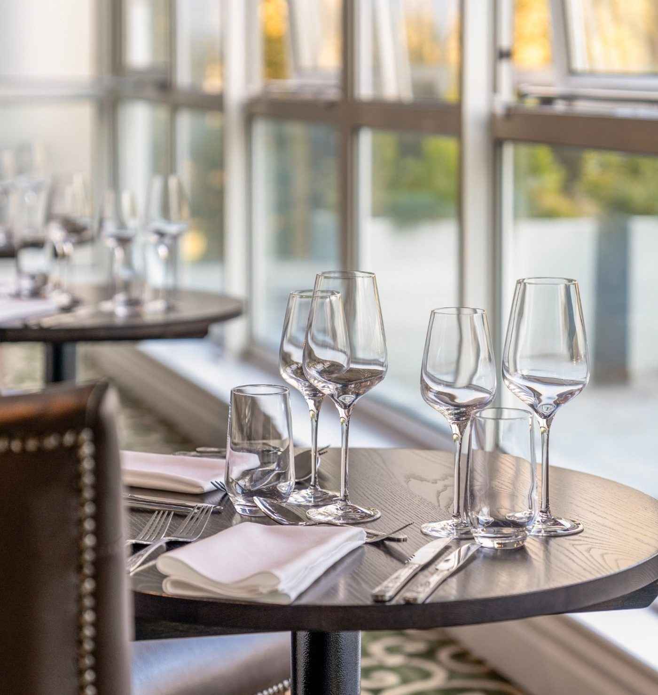

Turning a strong kitchen and a prime Newcastle location into a dining destination in its own right, led by the Sunday roast.
Thanks for reaching out. We are Fusion Creative, a content marketing agency based in Newcastle, and we work with hospitality businesses across the North East to turn great food into a local following. We had a proper look at the Grand Hotel Gosforth Park across the website, the hotel Instagram and TikTok, and the wider Elite Venue Selection channels. The honest take is that the hotel has the assets that a destination restaurant is built on (two dining spaces, a Sunday roast already on the menu, and a prime spot off the A1 by the racecourse), but the kitchen has no voice of its own online. The food sits inside general hotel content, so to a local in Gosforth or Jesmond the restaurant is somewhere guests eat, not somewhere to book a table.
The plan we would recommend is simple and low disruption: give the kitchen its own food-led content stream, built around the Sunday roast as the flagship, run inside Britannia's brand guidelines and sign-off, aimed at the local audience within a few miles of the hotel. The goal is measurable (covers on quieter services, direct restaurant bookings, and a local food following that the hotel currently does not have), and the process is designed to be brand-safe and easy to approve.
We generated over 87 million views across Instagram and TikTok for a single local North East hospitality business, from a steady stream of short-form food videos. One reel alone reached 70 million views. They went from a standing start to a name people travel for, all filmed locally. That same engine, food shown as content built to travel rather than just posted, is exactly what turns a hotel restaurant into a place locals choose to book. The Grand has the kitchen and the location. The job is a food identity and reach.
| Website | grandhotelgosforthpark.co.uk Established |
| Dining venues | Plate Restaurant & Chats Bar Two spaces to work with |
| Sunday roast | Already on the menu Ready-made flagship |
| Location | Off the A1 at Gosforth Park, near the racecourse Strong local catchment |
| Instagram (@grandhotelgosforthpark) | Active, hotel-led Little food focus |
| TikTok (@grandhotelgosforthpark) | Active, hotel-led Scale it for food reach |
| Group channels (@elitevenueselection) | Instagram, Facebook, TikTok Group-level, not local food |
| Food identity online | No distinct voice The core gap |
| Content style | Hotel and amenity led Not built to travel |
| Other assets | Spa, pool, weddings, conferences Cross-promotable footfall |
| Area | Gosforth, Jesmond & wider Newcastle |
Sitting off the A1 at Gosforth Park, minutes from the racecourse and surrounded by Gosforth and Jesmond, the hotel has one of the better catchments in the city. There is a large local audience of exactly the people who fill independent restaurants at the weekend, and right now very few of them think of the Grand as an option.
A Sunday roast is on the menu, and there are two distinct spaces in the Plate Restaurant and Chats Bar. That matters, because the hardest part, having something worth showing, is already handled. This is not about building a new offer, it is about giving the one you have a voice.
Hotel guests, spa visitors, weddings and conferences all bring people through the doors every week. That is an audience most standalone restaurants would envy, and it is a natural source of content, covers and reviews once the food has somewhere to point them.
The hotel is present on Instagram and TikTok, and the group runs the Elite Venue Selection accounts. The posting habit and the accounts are in place. The opportunity is not to start from nothing, it is to add a food-led stream to what is already there.
A roast is visual, seasonal, easy to book and something people plan their week around. It is the ideal flagship for a local following: a single, repeatable service that content can be built on every week, giving the kitchen a clear identity to grow from.
The hotel already has the kitchen, the spaces and the location. The job is to turn that into a local food following and measurable covers, and to do it in a way that is brand-safe and easy for a corporate group to approve. These are the six areas we would focus on.
Right now the food lives inside general hotel content, so it never builds a following of its own. The single biggest move is a dedicated food-led content stream, the dishes, the roast, the chefs, the produce, presented as its own identity rather than one more amenity alongside the pool and the rooms.
A restaurant that people book, rather than one guests happen to eat at, needs to look and sound like a restaurant online. That is the difference we would build first.
The roast is the ideal flagship: visual, weekly and easy to book. We would build a consistent run of content around it, the plating, the trimmings, the carving, a full table, so that "Sunday lunch at the Grand" becomes a thing local people recognise and plan around.
One strong, repeatable product gives the content a spine and gives locals a specific reason to choose you over the independents down the road.
Hotel photography tends to show rooms and spaces. Food that travels on social is close, warm and appetite-driven: the pour of gravy, the crackling, the first cut, steam off the plate. Short vertical video of the dishes themselves, filmed properly, is what stops the scroll and fills tables.
The Plate and Chats menus are the raw material. Shot as content built to travel, the food does the marketing on its own.
A hotel restaurant competing with Gosforth and Jesmond independents needs its own local following, not just passing guests. We would tune the content and targeting to people within a few miles of the hotel, the audience who decide where to eat on a Sunday, so the restaurant is discovered as a destination in its own right.
This is content only a local team on the ground can make, and it is exactly where a hotel kitchen can win back the neighbourhood.
People connect with the people who cook their food. Chef-led content, prepping the roast, talking through a dish, the pass at full tilt, builds trust and personality fast, and it is the kind of thing a hotel kitchen almost never shows. It puts a human face on the food and gives the restaurant a character the group accounts cannot.
Anthony, this is where your involvement makes the biggest difference, and it is low effort to film around a normal service.
Working inside a corporate group means approvals, brand guidelines and sign-off, and that is a structure we plan around rather than fight. We would agree a simple content and approval flow up front, film around real services with minimal disruption to the kitchen, and report on clear outcomes so decision-makers can see the return.
The aim is content that is easy to approve, safe for the brand, and tied to numbers that matter: covers, bookings and local reach.
New Greek is a small independent food business in Newcastle. No following, no content history, no ad budget. They started from zero. Here is where they got to after working with Fusion Creative.
We have also grown a North East restaurant, Takdir in Whitley Bay, with the same food-led approach. The Grand does not need a new offer. It needs its food seen by the local diners who have not booked a table yet.
These are formats working right now on TikTok and Instagram Reels, built around what the kitchen already does: the roast, the dishes, the team and the place. Each one could be filmed on a phone around a single service, with no disruption to the pass.
A close, cinematic build of the roast: the crackling, the carving, the Yorkshire, the gravy poured over the top, ending on a full table. Strong hook on frame one ("Sunday lunch just off the A1 in Gosforth"). Trending audio, under 25 seconds. The signature piece for the flagship product.
A short, honest look at a dish coming together, plated and sent, with the chef talking through it in a line or two. Real kitchen, real people, filmed around a normal service. Human, warm and something a hotel restaurant almost never shows.
A local-first piece aimed at people deciding where to eat nearby: the setting, the parking, the roast, the value of a proper Sunday lunch minutes from home. Tag the location, speak to the neighbourhood, position the Grand as a destination rather than just a hotel dining room.
A repeatable series taking one Plate or Chats dish from the first prep to the finished plate, quick cuts, satisfying details, a clean payoff. Easy to run week after week and perfect for showing the range and quality of the kitchen over time.
A few extra wins that would compound the content work and turn more of your local visibility into booked tables and covers.
When someone searches "Sunday roast near me" or "restaurants in Gosforth", your Google profile and reviews decide whether they walk through the door. For a hotel restaurant, this quietly does a lot of heavy lifting, and it deserves to be front and centre and constantly fed.
Once the content is driving interest, the path from "that looks good" to a booked table needs to be short. A clear, simple booking route for the restaurant, separate from a hotel room enquiry, turns local attention into covers.
A small, tightly targeted budget puts your best roast and dish content in front of people within a few miles of the hotel, the exact audience deciding where to eat this weekend.
Why it fits the Grand: a full Sunday service pays back a lot of content and ad spend, which makes local ads one of the highest-return, easiest to measure moves available.
Fusion Creative is a content and marketing agency based in Newcastle. We produce short-form video content, manage social media accounts, run paid campaigns, build websites, and handle branding. Everything under one roof.
We work with hospitality and growing businesses across the North East, and we film in person, on the ground, right here. No stock footage, no generic templates, no recycled ideas. Every piece of content is original and tailored to the business.
Our headline result is New Greek, a small independent North East food business that went from zero followers to over 87 million views across Instagram and TikTok, including one reel that reached 60 million views. We have also grown Takdir, a restaurant in Whitley Bay, with the same food-led approach. We know how to take a great local kitchen and make it impossible to scroll past.
We also build and run websites for the businesses we work with. For New Greek we built the restaurant website (newgreek.co.uk) and the New Greek Bakery site, and run all of their content, the same end-to-end approach we would bring to the Grand.
Here is how we would help turn the Grand's kitchen and location into a local food following and covers. It centres on short-form video, filmed around your real services and led by the Sunday roast, with the channels built and run for you, and a brand-safe process that works within corporate sign-off. It is the same full-service approach we run for New Greek, where we built the website and run all of their content.
A steady stream of short-form food video built around the roast, the dishes, the chefs and the setting, edited to travel and posted to build a local following the restaurant does not currently have.
We can run a dedicated food-led presence for the restaurant, tuned to local diners in Gosforth and Jesmond, alongside the existing hotel and group channels, so the food finally builds an audience of its own.
We can run tightly targeted local ads that put your best roast and dish content in front of nearby diners deciding where to eat, and drive restaurant bookings straight to you.
We also build and optimise websites and set up simple restaurant booking and enquiry capture, so the new attention turns into covers rather than just views.
See examples: here are two hospitality sites we built and run, the New Greek restaurant and the New Greek Bakery, with menus, ordering and bookings. View New Greek → View New Greek Bakery →